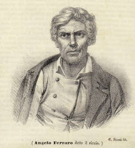

August Kopisch
Entdeckung der Blauen Grotte auf der Insel Capri
 |
| Bild: August Kopisch |
Es war im Sommer des Jahres 1826, als ich mit meinem Freunde Ernst Fries in der schönen Bucht, an der nördlichen Marine von Capri landete. Die Sonne neigte sich dem fernen Ischia zu, als wir in den rasselnden Uferkies hinabsprangen. Capri war die erste Insel, die ich betrat, und nie werde ich den Eindruck vergessen. Einer meiner liebsten Wünsche erfüllte sich. Ich hörte nun das Meer um alle jene wunderbar gestalteten Felsen rauschen, die schon von Neapel aus meinen Sinn zauberisch gefangen genommen. Jede brandende Wellenreihe sang mir zu: ich sei vom Festlande geschieden, auf einer Klippe, wo ein einfaches Volk von Fischern und Gärtnern wohnt, und der Hufschlag der Rosse und das Geroll der Wagen unbekannt ist. Mit ihren Felsen und Höhlen, und hängenden Gärten und alten Trümmern, und neuen Städten und Felsentreppen war mir die Insel schon von fern als eine besondere Welt erschienen, erfüllt von Wundern und umschwebt von grauenvollen und lieblichen Sagen, und nun, da meine Zeit nicht eng beschränkt war, durfte ich hoffen diese Welt in allen ihren Grenzen genau durchforschen zu können. Dieser Gedanke machte mich unbeschreiblich glücklich. – Der Strand erfüllte sich bei unsrer Ankunft mit Leuten aus beiden Städten der Insel, Männern und Jünglingen, Weibern und Mädchen, die wohl im Stande waren an die alte, schöne, griechische Bevölkerung des Eilandes zu erinnern. Sie nahmen die Ladung des Marktschiffes, das auch uns gebracht, in Empfang, und trugen sie mit besonderer Gewandtheit, teils die hohe Felsentreppe zur Stadt Anacapri, teils die sanftere Lehne nach Capri hinauf. Ein munterer Bursche ergriff unser weniges Gepäck, und langsam folgten wir dem Zuge nach letztgenannter Stadt. Erst befanden wir uns wie auf der Scena eines riesigen Felsentheaters: im Vorgrund eine Reihe weißer Häuser mit flachen Dächern, worüber sich in immer größeren Halbkreisen, Terrasse nach Terrasse, Weingärten erhoben, bis prächtig aufsteigende Felsenwände und die nach oben ragende Stadt den Ausblick umgrenzten. Unser Pfad schlängelte sich jene Terrassen hinan. Die steileren Hänge sahen wir bedeckt von immergrünen Myrten und Lorbeergebüschen, auch Mastixbäume und einzelne Fächerpalmen wurden bemerkbar. Vögel flatterten über uns hin, und von den Ölbäumen herab sangen die Zikaden ihr eintöniges Lied. Der Weg war lang, der Abend lieblich. Alles, was ich je von jenem Eilande gelesen, tauchte vor meiner Erinnerung auf, und mischte sich mit den anmutigen Szenen der Gegenwart. Blickten wir zurück, so schimmerte fern herüber der reizende Golf von Neapel, Ischia, Procida und alle pontinischen Inseln.
Staunend und oft verweilend gelangten wir endlich auf das Joch der Insel, durch ein Turmtor, in die fast orientalisch gebaute, kleine Stadt Capri. Der Knabe, der unsre Habseligkeiten trug, führte uns, bei der Kirche vorüber, in die schöne weiße Locanda des Don Giuseppe Pagano, wo wir, gegen mäßige Vergütung, die freundlichste Aufnahme fanden.
Unser Wirt, ein kleiner behaglicher Fünfziger, führte uns Trepp' auf Trepp' ab in seinem wunderlich, doch sehr heiter gebauten Hause umher, und als ich bei einer kleinen Sammlung alter Bücher verweilend stehn blieb, erzählte er mir: er habe sie in Neapel gesammelt, als er dort studiert, und stellte sich mir zugleich als den Notar des Ortes vor. Ich war sehr erfreut in ihm einen unterrichteten Mann und in seiner Bibliothek mehrere Bücher, lateinische und italienische, zu finden, die teilweise von Capri handelten. Als er sah, dass ich die Absicht hatte, die Insel recht gründlich kennen zu lernen, trug er mir mit großer Freude sogleich Alles zusammen, was mir dazu von seinen Büchern nützlich sein konnte, und versprach den andern Tag noch Mehreres von Freunden beizuschaffen. Er nahm an unsrer, aus allerlei, mir zum Teil noch unbekannten Seetieren bestehenden Abendmahlzeit teil, und wir wurden bald gute Freunde. Nachdem wir uns mit Speise und Trank erquickt, stieg die ganze Familie des Notars mit uns auf das Dach des Hauses, wo wir uns niederließen, und behaglich plaudernd des schönen Blickes über Stadt und Insel bei Sternenlicht genossen. Don Pagano aber deutete im Helldunkel der klaren Nacht auf Alles hin, was ihm merkwürdig erschien und erzählte davon, was er irgend wußte. Unsre Augen folgten ihm angestrengt in das mystische Dunkel und, je weniger wir eigentlich zu erkennen vermochten, je mehr ward unsre Neugier gespannt. Wir besprachen uns mit ihm über die Ausflüge, die wir nach und nach machen wollten, und nahmen uns vor, in den heißen Mittagsstunden zu Hause zu bleiben und die Odyssee zu lesen, auch wollte ich diese Zeit benutzen, in den erwähnten Büchern zu studieren, um, wo möglich, der gründlichste Kenner der Insel zu werden. Erzählen, wie treu wir den in jener ersten romantischen Nacht gefaßten Vorsätzen geblieben, wie wir bald nach dieser bald nach jener zertrümmerten Villa Tibers, bald zum Sirenenfelsen hinab, bald die Felsentreppe nach Anacapri hinan, bis zum Gipfel des Monte Solaro emporgeschwärmt, und welche glücklichen Tage wir in der Familie des Notars verlebt, würde den geneigten Leser zu weit führen. So viel Anmutiges sich darüber beibringen ließe, ziehe ich es vor, hier einen leichten Umriß der Gestalt und Geschichte der Insel zu entwerfen, um dann zur Schilderung eines Abenteuers überzugehn, welches unerwartet Veranlassung gab, dass die Insel und Don Paganos Haus nun häufiger von Fremden besucht werden, als je vorher. Will man sich von der Gestalt Capris eine klare Vorstellung machen, so denke man sich einen Teil des Meergrundes, hier aus Apenninenkalk bestehend, von Morgen her, mit abendlicher Neigung, erhoben zu einer drei Viertelmeilen langen und halb so breiten Scholle, diese jedoch querüber, von Süden nach Norden, so zerbrochen, dass die westliche Hälfte dicht am Abbruch die höchste blieb, etwa 2000 Fuß hoch, während die östliche (zu Anfang die höchste) zurücksank, und in halb so hohen Trümmern stehn blieb. Die Kluft zwischen beiden ließ, obwohl hocherfüllt vom nachstürzenden Geröll, nördlich eine größere Bucht, südlich eine kleinere. Südöstlich ist die Zertrümmerung so stark, dass mehrere turmähnliche Felsensplitter, die Fariglioni genannt, noch weit vom Ufer einzeln dem Meer entragen. Der eine bildet ein riesiges Tor, welches man durchsegeln kann. Ringsher aber ist der ganze steile, mehr oder minder zertrümmerte Felsrand der Insel reich an mannigfaltigen Grotten, gebildet durch Einstürzungen, geschmückt mit bunten Tropfsteinzacken. In viele dieser Höhlen braust das salzige Element hinein, mit all seinen Farbenspielen. In der ältesten Zeit war die Insel mehr zerklüftet als jetzt und allein mit Gestrüpp bewachsen, nur wilde Ziegen waren ihre Bewohner, wovon sie den Namen Capreae erhielt. Ein platter Stein in der südlichen Bucht heißt die Sirene, und die Sage geht: Odysseus habe den gefahrvollen Gesang hier vernommen. Wahrscheinlich erbauten die Telebojer in der nördlichen Bucht die erste Stadt. Die Insel blieb wenigstens lange Zeit der griechischen Kolonie in Neapel unterworfen. Sie blühte fröhlich auf und nach griechischer Sitte waren ihre schönen Jünglinge wohl geübt im Ringen, im Faustkampf, im Wettlauf, im Lanzenwerfen und in allen zierlichen Tänzen.
Als Kaiser Augustus hinkam, gefiel ihm das Eiland mit seinen lustigen Einwohnern so wohl, dass er den Neapolitanern die viel größere Insel Ischia dafür überließ. Eine alte dürre Steineiche soll sich bei seiner Ankunft neu begrünt und dieses Wunder ihn noch mehr zu jener Wahl bestimmt haben. Auf dem östlichsten Felsgipfel erbaute er sich einen prächtigen Palast, wo er oft die Lasten seiner kaiserlichen Arbeiten abwarf und sich an den Wettkämpfen der capraeischen Jugend erfreute. Später ward Capri der Verbannungsort der schönen Julia. Die Trümmer ihres Palastes finden sich am westlichen Hange des Berges, welcher nun den Telegraphen trägt.
Als Tiberius zur Regierung kam, erinnerte er sich der frohen Tage, die er mit August auf Capri verlebt, warf die Plagen und Gefahren der Regierung auf Sejanus Schultern und zog sich auf diesen sichern Felsen zurück, wo er sich den abscheuwürdigsten Freuden ergab, während seine schrecklichen Machtsprüche die Welt quälten. Viele Jahre lebte er hier, beständig mißtrauisch um sich spähend von der hohen Klippe, die er, sein Gewissen zu übertäuben, in einen sinnlichen Himmel verwandelte, worin zu schwelgen – er schon zu abgelebt war. Fahrwege wand der greise Tyrann um steile Zacken, auf alle Gipfel fuhr er mit Rossen. Er veränderte die Gestalt der Insel, schwang ungeheure Bogenreihen über tiefe Täler, und schuf sich künstliche Ebnen, worauf er üppige Gärten erblühen ließ, in deren Grotten, Tempeln und Gebüschen die schändlichen Sklaven seiner Laster als Faunen und Nymphen umherschwärmten. Zwölf Paläste ließ er an verschiednen Stellen der Insel entstehen und weihte sie den zwölf großen Göttern. Der dem Jupiter geweihte erhob sich östlich, auf dem äußersten überhangenden Felsgipfel (nun St. Maria del Soccorso), von welchem der Tyrann die Sklaven, denen er übel wollte, über scharfe Zacken hinab in das Meer stürzen und unten mit Rudern zerstoßen ließ. Ein der Mater magna geweihter Palast war südlicher in eine abhängige Kluft, um und in eine Höhle gebaut. Der dem Neptun geweihte lag gegen Norden, von der Mitte der Insel, mit schönen Bädern in das Meer hinaus; an den sanften Hang darüber lehnte sich der Venuspalast, wenig entfernt davon ein Amphitheater; an demselben Hange noch östlicher erhob sich, irgend einer andern Gottheit gewidmet, wieder ein Palast; der Gipfel neben der Stadt aber trug den, in welchem der Tyrann über das Meer blickend auf und ab ging, als er die Nachricht von der Hinrichtung des von ihm verurteilten Sejan erwartete. Die andern Paläste Tibers waren auf der Insel verteilt, bis an das südliche Ufer hinab, wo er, bei jenen phantastisch aus dem Meer emporragenden Felsentürmen, das Arsenal für die Flotte, die ihn beschützte, baute. Dort ließ er in einer mächtigen Strandhöhle seine Schiffe zimmern oder aufstellen. Aus seinen Palästen führten überall heimliche Gänge durch die Felsen bis in die See hinab, wobei er die vorgefundnen Höhlen vielfach benutzte. Zu jener Zeit muß die Insel einen wahrhaft einzigen Anblick gewährt haben, da die wildeste, zerrissenste Natur der Baukunst die mannigfaltigsten Motive bot, und die Schätze der Welt verschwenderisch angewendet wurden, jeden phantastischen Einfall schnell zur Wirklichkeit zu gestalten. Aber alle diese Pracht verschwand, einer Sage nach, bald nach Tibers Tode, zerstört vom Haß und Abscheu des römischen Volkes, und überall, auf Höhen, in Klüften und bis ins Meer hinab, liegen die flüchebelasteten Trümmer.
Nach Tiber besuchte Caligula die Insel, verweilte jedoch nicht lange daselbst. Auch Vitellius war in seiner Jugend hier, Lucilla und Crispina wurden von ihrem Bruder, dem Kaiser Commodus, hierher verbannt. Mit diesen Nachrichten will man obige Sage widerlegen und schiebt alle Zerstörungen auf der Insel den Barbaren und Sarazenen zu, welche freilich in diesen Gegenden schrecklich gewütet haben.
Der furchtbare Seeräuber Barbarossa zerstörte die Stadt am Ufer, und soll sich auf jäher Felszacke eine Burg erbaut haben. Ihre Trümmer zeigt man, hoch über der Treppe die mit 554 Stufen zum westlichen höhern Teil der Insel hinanführt. Die späteren Einwohner stellten die neue Stadt auf das Joch der Insel, dem Berg Madonna della Libera nahe. Eine mehrere hundert Fuß hoch gewölbte Grotte desselben nahm damals die gesamten 2000 Einwohner auf, wenn eine Übermacht von Seeräubern die Insel überfiel. Jene Grotte befindet sich an der Südseite des Berges, und hängt ganz uneinnehmbar über das Meer hin, so dass die Flüchtenden sie nur auf aneinander gehängten Leitern erreichen konnten. Die Jünglinge wehrten oft noch den Feind ab, während man die Kranken und Alten, in Körben an langen Seilen, an einigen Stellen erst hinabließ, um sie an andern weiter hinauf bis zur Grotte hinanziehen zu können, wohl über hundert Fuß hoch. Feuerstellen und Trümmer einer zur Abwehr erbauten Mauer sind in der überaus imposanten, oben mit Tropfsteinen geschmückten Höhle noch sichtbar.
In jenen unruhigen Zeiten mag auch die zweite Stadt Anacapri am Monte Solaro entstanden sein, wohin die erwähnte Treppe führt, oben noch versehn mit einer Zugbrücke.
Als in neuern Zeiten die Franzosen Neapel schon eingenommen hatten, hielten die Engländer noch unter Church die Insel besetzt, und erbauten überall Schanzen und Kastelle. Dennoch erstiegen die Franzosen zur Nachtzeit auf der westlichen Seite, wo sich die Insel ins Meer neigt, dieselbe mit aneinander gebundenen Leitern, und trieben die Engländer über Anacapri die unendliche Treppe hinab, über die Höhen der andern Stadt nach dem zertrümmerten Arsenal des Tiber hinunter, wo sie sich bald einschifften und davonsegelten. Die Besatzung des Kastells auf dem höchsten Gipfel der Insel wußte von dem Hergange nichts, und schickte nach einigen Tagen ein Kommando hinab, um Proviant zu holen. So erfuhren die Franzosen erst, dass dort oben noch Feinde seien, gingen hinan und nahmen, ohne großen Widerstand zu finden, auch jenen höchsten Punkt ein. Sie zerstörten die Befestigungen dort oben, weil sie sich als völlig unnütz erwiesen. Nichts aber gleicht der Aussicht, welche man von jenem höchsten Punkt aus genießt. Zweitausend Fuß erhoben stürzt die höchste Zacke nach Süden so schroff ab, dass man mit einem Stein in das Meer werfen kann. Nach Westen senkt sie sich immer noch steil, doch nicht so jäh, nach der Stadt Anacapri hin, bildet dahinter eine sanft abfallende, breite, schön bebaute Lehne, die mit unzähligen höhligen und rissigen Riffen ins Meer geht. Nach Norden schaut man über die Barbarossaburg, nach Osten aber übersieht man die schöne fruchtbare Kluft, welche die Insel teilt, mitten die Stadt Capri, rechts und links die südliche und die nördliche Bucht, den erwähnten Berg mit der mächtigen Höhle, gekrönt von einer Burg, dahinter die Felsentürme mit dem Felsentore im Meer, links darüber den Telegraphenberg und alle zackigen Weinberge bis zum östlichsten Ende, wo die dem Jupiter geheiligten Augusteischen und Tiberischen Palasttrümmer und das Kirchlein St. Maria del Soccorso von der äußersten Zacke ragt. Alles dieses bildet den mannigfaltigsten Vorgrund für die Fernsicht auf das blaue Meer, die pontinischen Inseln und Ischia, Procida, die Golfe von Gaeta, Bajä, Neapel, Sarno und Salerno, hinter allen die blauen Abruzzen, im Mittelgrund den dampfenden Vesuv, näher, die Meerenge von Capri bildend, das prächtige Vorgebirge der Minerva, weiter die Sirenusischen Inseln, tiefer hinein die Ebne von Pästum, und südlicher das schön geschwungene Kap Licosa, welches träumerisch versinkt in die Ebne des Meeres. Wenn ich jener schönen Aussicht gedenke, ist es mir heute noch, als umwehe mich jener himmlische Ätherstrom, den ich dort geatmet; damals aber war das Erklimmen jenes Gipfels der Schlußstein meiner Ausflüge, die ich bei meinem ersten Aufenthalt zur Kenntnis der Insel machte, und mir blieb nun zu meinem nächsten Zweck nichts mehr übrig, als eine Umschiffung und Untersuchung aller ihrer Ufer.
Wir hatten, da das Meer um die Insel bisher täglich heftig bewegt war, den ersten stillen Morgen dazu bestimmt. Endlich schien ein lieblicher Abend uns diesen zu verkündigen. Wir teilten unsre Hoffnung unserm Wirt, dem Notar, mit. Er fand sie begründet und versprach uns zu der Fahrt einen erfahrnen Schiffer zu besorgen, der, wie er sich ausdrückte: die Toten aus der Unterwelt wieder zurückholen könne, so verstehe er zu rudern. »Er ist alt«, sagte er, »hat aber ein Auge wie ein Falke, ein Herz von Stein, und einen Arm von Eisen.« – Der Mann gefiel mir im Voraus und nachher noch besser; – denn er rettete uns den andern Tag zweimal das Leben. – Es wurde nach ihm gesandt.
Die lange Zeit, ehe der Bote zurückkehrte, benutzte ich dazu, den Notar über die ganze Expedition genau zu befragen, um mir alles Interessante für morgen zu notieren. Er gab mir als alter Capraeer sehr detaillierte Auskunft über alle schönen Stellen der Ufer und ihre Benennungen, die auf seinen schlechten Karten sehr unrichtig angegeben waren.
Als ich mit Notieren fertig war, gab ich ihm das Blatt zum Durchlesen. Bei der einen Stelle kniff er den Mund zusammen, nickte mehrmals mit dem Kopfe und brummte wunderlich vor sich hin. Ich fragte ihn: ob ihm noch etwas beifalle? – »Ja«, sagte er nach einer langen Pause, »mir fällt freilich etwas bei, aber, – es hat eine eigne Bewandtnis damit: – ich bin nun schon sechsundfünfzig Jahr alt und habe in meinem Leben noch Niemanden dazu bereden können, es ist besser, ich lasse das Ding wieder fahren!« – Damit wollte er schweigen, da aber meine Neugier nur um so reger wurde und ich ihn wiederholt gefragt, was er damit meine? fuhr er endlich in seiner Rede so fort: »Ja, sechsundfünfzig Jahr bin ich alt, und habe einen Wunsch mit mir herumgetragen, fast eben so lange. Der Wunsch ist folgender:
An der nordwestlichen Seite unsrer Insel ragt eine Art Turm, Damecuta genannt. Dort umher sind eine Menge römischer Ruinen und wahrscheinlich war dort ebenfalls ein Palast Tibers. Im Volk geht auch die Sage, der Ort habe sonst Dame chiusa geheißen, d. h. Frauenverschluß, weil Kaiser Tiber dort seine Mädchen verschlossen.« – Ich warf ihm scherzend ein: es sei doch wohl nicht seine Absicht dieselben zu erlösen? –
»Nein«, antwortete er lachend: – »aber ein Schloß Tibers hat da gestanden! Hört mich weiter«, fuhr er wieder sehr ernsthaft fort: »unterhalb jener Trümmer ist am Ufer des Meeres ein Ort, Grottelle genannt, wo das Meer in viele kleine Höhlungen mehr oder minder tief eindringt. Eine derselben mit winzigem Eingange ist sehr verrufen und die Schiffer halten sich auch am hellen Tage fern davon, meinend, der Teufel wohne darin mit vielen bösen Geistern. Ich aber«, – hierbei sah er sich um, ob ihn jemand der Seinigen höre, und fuhr, als er uns allein sah, leiser fort: – »ich aber glaube es nicht. – Hier auf der Insel darf man so etwas nicht laut werden lassen, sonst wird man für wenig fromm gehalten. – Indes Ihr seid ein studierter Fremder, und werdet mir zugeben: die Frömmigkeit bestehe in etwas Andrem, als im Glauben an Teufelsgespenster. Genug, ich habe von Jugend auf eine Sehnsucht verspürt, gerade in diese Höhle zu schwimmen und sie zu erforschen. Dabei gestehe ich Euch aber eben so offen, dass mich bei dem Gedanken doch ein Schauerchen anweht, und dass ich es nie wagen wollte und jetzt, als Familienvater, noch weniger wagen werde, allein hineinzuschwimmen. Da sei Gott vor! Aber wohl hundertmal habe ich als Knabe, als Jüngling und als Mann Freunde und Bekannte, die rüstige Schwimmer waren, gebeten, mich dahinein zu begleiten, vergeblich! – Die Teufelsfurcht war zu gewaltig in ihnen, als dass meine Bitten irgend etwas vermocht hätten. Nun aber hört, was mich später noch mehr in meinem Wunsche bestärkt hat. Ich vernahm vor etwa dreißig Jahren von einem uralten Fischer, dass vor zweihundert Jahren ein paar Geistliche den Spuk haben bestehn wollen. Dieselben sind auch ein Stück in die Grotte hineingeschwommen, aber gar bald wieder umgekehrt, in dem sie eine greuliche Furcht angekommen. Nach der Aussage dieser Priester soll die Grotte inwendig aussehen, wie ein sehr großer Tempel, mit einem Hochaltar; ringsherum aber Alles voll von Götzenbildern sein, und das Wasser innen so wunderlich beschaffen, dass die Angst darin zu schwimmen ganz unbeschreiblich sei. In älteren Büchern stehe auch eine Nachricht davon, die ein Schriftsteller immer von dem andern abgeschrieben: seit vielen hundert Jahren aber sei Niemand eigentlich darin gewesen.«
»Zu alle diesem kommt noch eins«, sagte der treffliche Notar, indem er seine Hand fest auf die meinige legte: »ich für mein Teil halte die Ruinen darüber durchaus für ein Tiberschloß und, da Tiber keinen Palast ohne heimlichen Ausgang gehabt, behaupte ich und versichere Euch: der heimliche Ausgang jener Ruine geht durch diese Grotte! So könnte die Grotte, die inwendig weit gewölbt ist, gar wohl ein Tempel des Nereus und der Nymphen sein, um so mehr, da man aus den alten Klassikern weiß, dass Tiberius die Höhlen von Capri vielfach benutzt und in seinem Sinn ausgeziert hat. Noch muß ich Euch sagen, dass alle Fremden, denen ich bisher davon gesprochen, meine Gedanken als wunderliche Träume belächelt; in Euch aber setze ich das Vertrauen, dass ihr mir Recht gebet, wenn ich behaupte, die Sache sei genauerer Untersuchung wert!«
Ich erwiderte ihm: »Lieber Herr Notar, die Fremden, die über Eure Schlüsse lachten, kommen mir fast so einfältig vor, als die Einheimischen mit ihrer Teufelsfurcht. Alles, was Ihr mir da erzählt, hat Hand und Fuß, und ich bin so vollkommen Eurer Meinung, dass ich vor Begierde brenne, mit Euch den verrufenen Teufelstempel zu untersuchen.« –
»Aber man kann nur schwimmend hinein!« warf der Notar noch zweifelnd ein, »inwendig ist die Grotte tief mit Wasser erfüllt.« –
»Desto besser!« sagte ich: »so können wir untertauchen, wenn die bösen Geister uns mit Feuer peinigen wollen.«
»Ihr scherzet?« sprach der Notar.
»Nein, ich scherze nicht!« gab ich ihm zur Antwort: »Ihr habt in mir endlich, nach sechsundfünfzig Jahren, den Mann gefunden, der bereit ist, das Abenteuer mit Euch zu bestehen, und, damit Ihr seht, dass ich Ernst mache, lade ich Euch auf morgen ein, mit uns zu fahren. Wir können, da wir doch baden wollten, bei jener Grotte anhalten, und unser Bad bei den Dämonen nehmen, in dem Wasser, das die guten Geistlichen vor zweihundert Jahren so geängstigt hat?« –
Da erheiterte sich das Gesicht des Notars. »Topp!« sagte er: »ich bin dabei! Wisset, so alt ich bin: ich schwimme noch mit jedem um die Wette! – Erlaubt, dass ich Euch küsse, lieber Don Augusto! Sprechen wir nur leise, dass Niemand im Hause etwas davon merkt: sie lassen mich sonst nicht fort; denn die Angst ist groß, wie ich Euch sage!« –
»Wir müssen uns nur jetzt darüber beraten«, fuhr ich fort, »wie wir das Unternehmen einrichten. Ist der Eingang so klein, wie ihr sagt; so muß es in der Grotte finster sein: wir werden also Fackeln mitnehmen müssen, oder ein Pechfeuer in einer Kufe?« –
»Allerdings«, meinte der Notar: »die können wir schwimmend vor uns herstoßen, und dabei trefflich sehen, wie die Grotte beschaffen ist. Angelo soll Alles besorgen!« –
|  |
| Bild: Angelo Ferraro |
Mein Reisegefährte, der bisher geschwiegen hatte, warf hier ein, die Sache werde so zu umständlich und zeitraubend, auch gäbe es viel solcher Höhlen, die Italiener glaubten überall Schätze zu finden: er stimme gegen das Unternehmen. – Da wurde das eben noch heitre Gesicht des Notars leichenblaß, ich aber sagte ihm: er solle getrost sein, die Sache werde jedenfalls durchgesetzt. Nun stellte ich meinem Freunde wiederholt vor, wie wir morgen doch hätten baden wollen, und ein Bad in der Grotte nicht länger aufhalte, als ein anderes. Wir könnten daher Alles recht gut mit der Umseglung der Insel vereinigen, habe er aber morgen nicht Lust, so wolle ich die Sache verschieben. Endlich gab er nach, und versprach mit hineinzuschwimmen. Niemand war froher als der Notar. Indem kam Angelo Ferraro der alte Schiffer, ein Mann, dem Meerluft und Sonnenbrand die Farbe der Zimmetrinde gegeben. Mit schlichtem, festem Anstande trat er vor uns hin, die Schifferkappe in der Hand. Wir fragten ihn, ob er sich getraue uns um die ganze Insel zu fahren? – »Meine Herren, so gut wie ein Andrer!« war seine Antwort. Hierauf gab ihm der Notar die nötigen Aufträge hinsichtlich der Grotte. – Der Mann machte große Augen.
»Diese Herren wollen in die Grotte schwimmen?« –
»Ja! und ich auch«, sagte der Notar: »willst Du mit hinein Angelo?« –
»Ihr auch?« sagte der Schiffer, und trat verwundert einen Schritt zurück. »Und wenn es so ist«, schloß er mit dem Fuße stampfend: »so gehe ich auch mit hinein! Ja, Angelo geht mit!« –
»Bravo Angelo!« rief der Notar.
»Ja!« sagte Angelo: »in dieses Teufelshaus habe ich schon lange einmal hineinkucken wollen, aber allein? – da sei Gott vor! Nun aber sind wir unsrer Vier, und wo ihrer Viere sind, weichen die Dämonen. Ich werde mich selbst in eine Kufe setzen, und voran hineinrudern, die Kufe mit dem Pechfeuer aber angebunden vor mir hertreiben; so können die Herren sich besser umsehen, als wenn sie sich selbst damit plagen, und das Feuer so